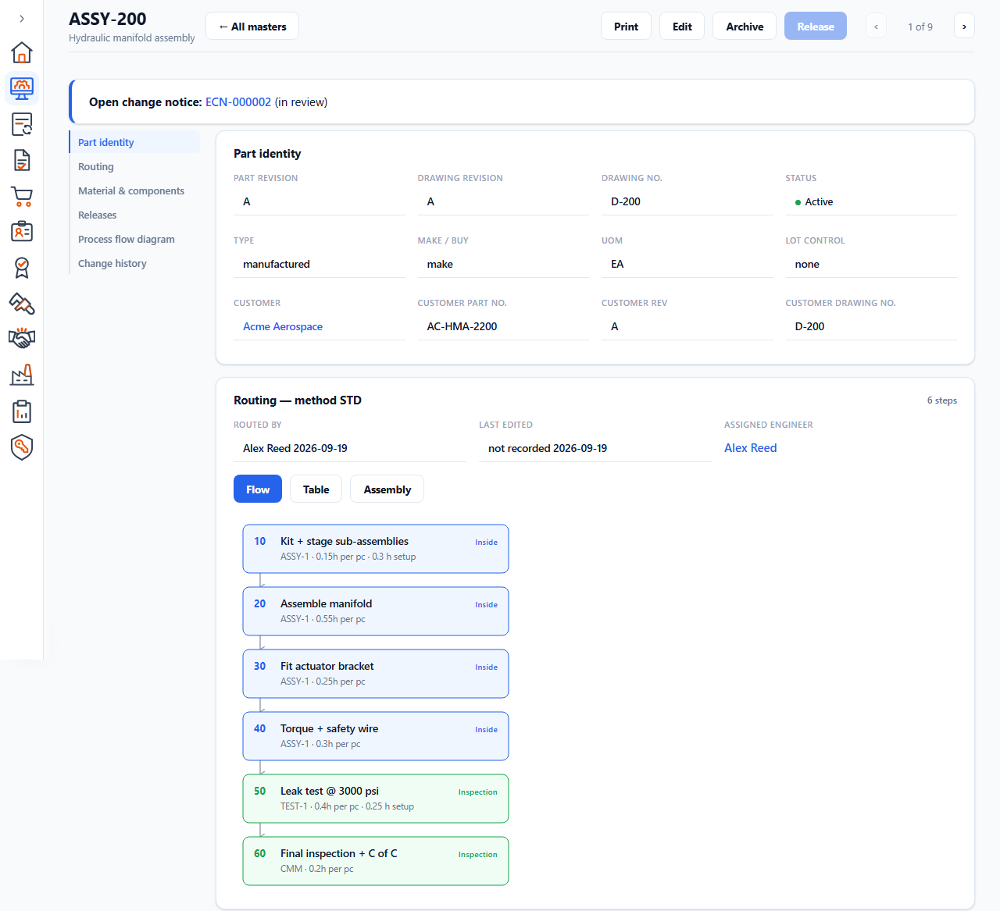
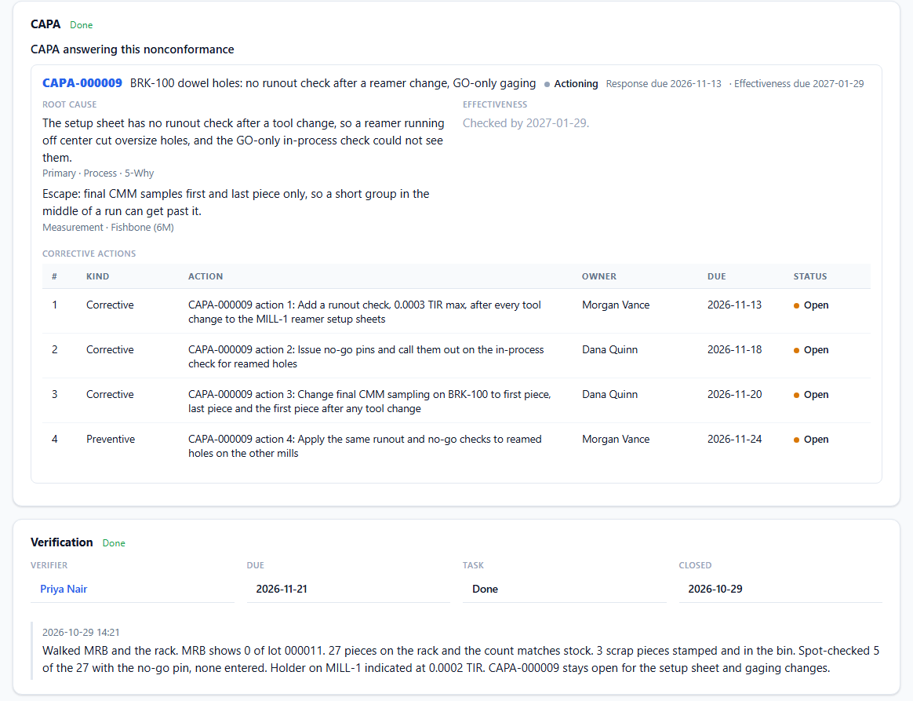

Forge + PM Tracker
Forge + PM TrackerIndustries
Built for shops where the record matters as much as the part.
Forge and PM Tracker are made for small manufacturers doing regulated or customer-audited work. Here's how each fits.
Machine and job shops
Know what each job costs, and when it will ship
When quotes, travelers and the schedule live in separate files, people re-type the same job and find out what it cost long after it shipped. Forge keeps the whole job on one record.
- Quotes, sales orders, work orders, shipping and invoicing
- Parts with revisions, bills of materials and routings
- Job costing compared with the quote
- A job schedule that flags late work, and a machine board as a module
- Clock in and out, and job start and stop, on any terminal with unlimited operators

Aerospace and defense
Inspection and quality records that keep up with the work
Customers and auditors expect to see how each part was checked and what happened when something went wrong. Forge keeps that history with the job.
- Ballooned prints and inspection guide sheets (IGS)
- NCR and CAPA, linked to each other and to the job
- Gages and calibration, and internal audits
- Lot traceability and certificates of conformance
- Engineering and document change notices
- Designed to support AS9100

Medical device
Controlled documents, traceable lots and maintained equipment
A device maker has to show which revision was in force, which lot went where, and that the equipment that made it was maintained. Forge covers production and quality, and PM Tracker covers equipment.
- Controlled documents with review, approval and effectivity
- Change control, from change notice to close
- Audit trails and electronic signatures in Forge
- Lot traceability from receiving to shipping
- PMs, machine holds and QA review in PM Tracker
- Designed to support ISO 13485
- Forge: designed to support 21 CFR Part 11

GMP-regulated plants
Maintenance records an inspector can follow
PM Tracker is a self-hosted maintenance system for manufacturers regulated by the FDA, EMA, Health Canada and other health authorities. It replaces paper PM sheets and Excel logs with a record that can't be quietly changed.
- PM templates with checklists, and readings checked against limits
- Work orders that supervisors approve when they're done
- Breakdown requests repaired, then sent for QA review
- Machine holds, and a history report for each machine
- An append-only audit trail, and permissions by role

ISO 9001 shops
If your customers ask for ISO 9001, the same tools apply: NCR and CAPA, internal audits, calibration and controlled documents in Forge, and maintenance records in PM Tracker. Certification and validation remain with your shop.
Not sure which fits your shop?
Tell us what you make and what you use today. We'll tell you honestly where each product fits.